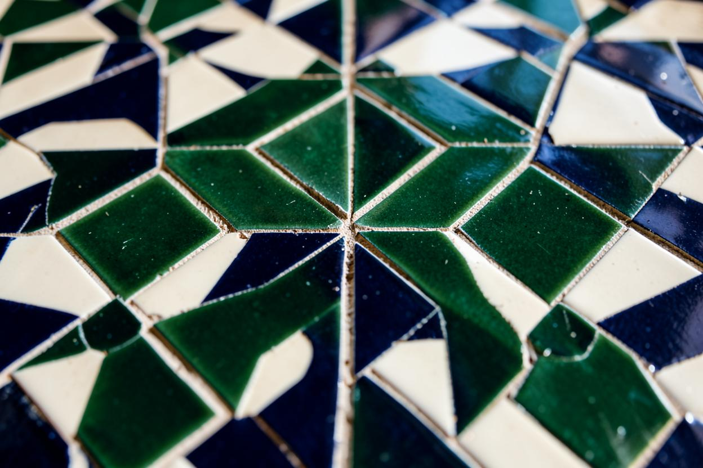

مكتب بالدار البيضاء، معتاد على الملفات التي تعبر الحدود.
ثمانية عشر شخصاً وخمسة شركاء وممارسة بُنيت إلى جانب مجموعات عائلية مغربية وفروع شركات أوروبية.


ممارسة ميدانية، لا واجهة تجارية.
أسّس المكتب خبيران محاسبان تكوّنا في مكتب دولي، انطلاقاً من قناعة بسيطة: المقاولة المغربية الصغرى أو المتوسطة تستحق نفس درجة الصرامة التي تحظى بها مجموعة مدرجة في البورصة، مع لغة أكثر مباشرة.
واكبنا صناعيين في النسيج بسطات، ومحرري برمجيات بالرباط، وفاعلين في اللوجستيك بطنجة المتوسط، ومستثمرين أوروبيين استقروا بالقطب المالي للدار البيضاء.
علّمنا هذا التنوع أن نطرح سؤالاً قبل إنتاج أي جدول: فيمَ ستُستعمل هذه المعلومة؟
- 18 متعاون
- 5 شركاء
- +200 عميل مواكب
- 15 سنة من الوجود
أربع قواعد نفرضها على أنفسنا
ليست في مطوية تجارية: هي التي تحدد من نقبل كعميل، وكيف نعمل.
-
01
كل رقم قابل للتبرير
الحساب غير الموثق لا يُعتد به. نفضّل الإشارة إلى منطقة غموض بدل تجميلها.
-
02
الأتعاب معلنة مسبقاً
مبلغ جزافي مكتوب، نطاق مفصّل، والإضافات المحتملة محددة سلفاً. لا فاتورة تفاجئكم.
-
03
نجيب بسرعة
كل طلب يتلقى جواباً خلال 24 ساعة عمل، حتى إن كان الجواب «نتحقق ونعود غداً».
-
04
الملف يبقى سرياً
الوصول مقصور على فريق المهمة، نسخ احتياطية مشفرة، ولا تُستعمل معطيات العميل تجارياً.
الشركاء
شريك موقّع لكل ملف، حاضر في المراحل الحاسمة: التأطير، التسليم والقرارات الصعبة.

-
التدقيق
يونس برادة
خبير محاسب ومراقب حسابات. ثمانية عشر عاماً من الممارسة، منها سبع في مكتب دولي. متخصص في الصناعة والمجموعات العائلية.
-
الضرائب
سلمى الفاسي
دكتورة في قانون الأعمال، مسؤولة القطب الضريبي والقانوني. تواكب هيكلة الاستقرار والمراقبات الضريبية.
-
الاجتماعي
هشام الوزاني
مسؤول القطب الاجتماعي والأجور. كان مسؤولاً عن أجور مجموعة من 900 أجير، ويتدخل في التدقيقات الاجتماعية وإعادة الهيكلة.
-
الاستشارة
نادية الشرقاوي
متحصلة على دبلوم في المالية، تقود مهام مخططات الأعمال والتقييم ومواكبة جمع التمويل.
نوظف. يستقبل المكتب كل سنة متدربين اثنين في الخبرة المحاسبية ومساعداً قانونياً. تُرسل الترشيحات بالبريد الإلكتروني مع سيرة ذاتية ورسالة قصيرة.
الإطار المهني
يمارس المكتب نشاطه داخل الإطار المنظم لمهنة الخبرة المحاسبية بالمغرب.
التسجيل والتأمين
- مسجلون في جدول هيئة الخبراء المحاسبين بالدار البيضاء.
- تأمين على المسؤولية المدنية المهنية، شهادة تُسلَّم عند الطلب.
- ممارسة مراقبة الحسابات مع احترام حالات التنافي القانونية.
- مساطر داخلية لمراقبة الجودة على كل ملف موقّع.
معطياتكم
تُستضاف الوثائق المحاسبية على خوادم بالاتحاد الأوروبي، مع وصول شخصي وتسجيل العمليات. تُحفظ نسخة احتياطية يومية لمدة ثلاثين يوماً.
تعالوا لزيارتنا. المكتب على عشر دقائق من محطة الدار البيضاء الميناء.
قهوة، وآخر حساباتكم إن كانت بحوزتكم، وننظر فيما يمكن تحسينه.